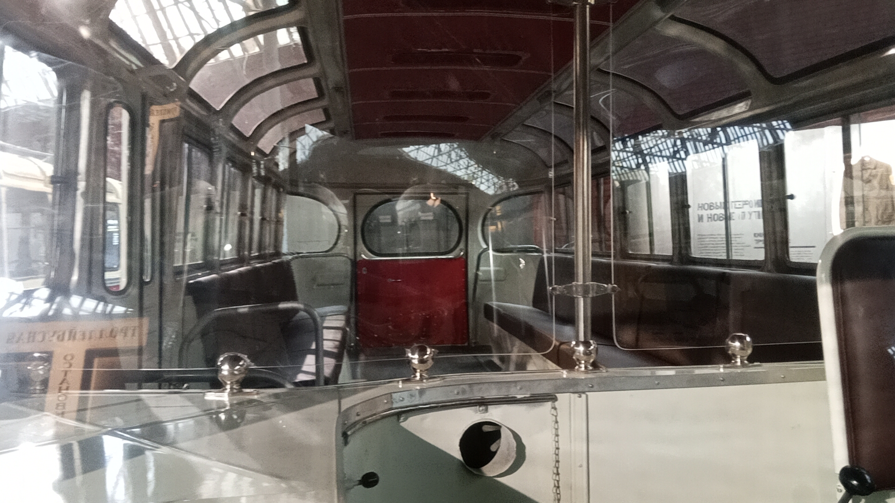
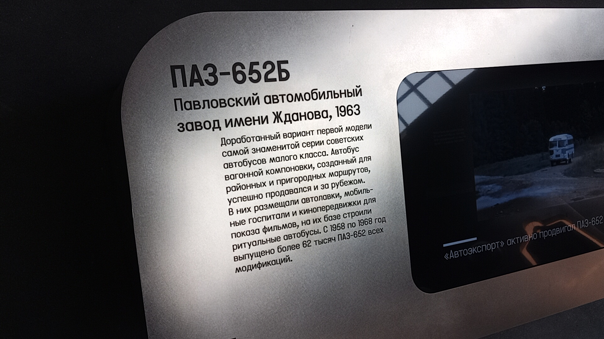

ПАЗ-652Б
ПАЗ-652Б — советский автобус малого класса, выпускавшийся Павловским автобусным заводом с 1958 по 1968 год. Первая модель завода с несущим кузовом вагонной компоновки.
Модификация 652Б пошла на конвейер в июне 1963 года после обнаружения проблем с прочностью несущего основания у базовой модели. Внешне почти не отличалась от предшественника, но получила усиленную основу кузова с лонжеронами из швеллеров, усиленные передний мост и рулевое управление.
Общая информация
🏭 Производство
Завод: Павловский автобусный завод (ПАЗ)
Годы выпуска: 1958–1968 (652Б — с июня 1963)
Всего выпущено: 62 121 (всех модификаций)
📍 Эксплуатация
Регион: СССР
Назначение: городские и пригородные маршруты
⭐ Первый вагонный ПАЗ: На момент освоения в 1958 году конструкция вполне соответствовала мировому уровню: сварной несущий кузов, панельная сборка, вакуумные механизмы дверей.
Технические характеристики
Основные параметры
Длина: 7,15 м
Ширина: 2,4 м
Высота: 2,8 м
Сухая масса: 4340 кг
Конструкция
Кузов: сварной несущий
Сборка: панельная, крупноузловая
Двери: вакуумные механизмы
Агрегаты: от ГАЗ-51
История
Первый опытный образец
В Павлове построили первый опытный ПАЗ-652 к 7 ноября 1955 года.
Начало серийного выпуска
Освоение модели в производстве. Конструкция соответствовала мировому уровню.
Выход модификации 652Б
Из-за проблем с прочностью основания у базовой модели, на конвейер пошла версия с усиленными лонжеронами, передним мостом и рулевым управлением.
Конец выпуска
Производство ПАЗ-652Б прекращено. На смену пришёл ПАЗ-672.
Интересный факт: На базе ПАЗ-652Б завод «Аремкуз» выпускал автокатафалк: вторую дверь зашивали, а сидения в задней части располагали параллельно бортам, чтобы через люк можно было закатить гроб.
Особенности
Усиленная основа
На 652Б несущую основу кузова дополнили лонжеронами из швеллеров из-за раннего выхода из строя базовой версии.
Символ эпохи
Самый массовый «пазик» 1960-х. Его можно увидеть во множестве советских фильмов, включая «Королеву бензоколонки» (1962).
Фотогалерея

📸 pfandrom

📸 pfandrom

📸 pfandrom
Нажмите на фото для увеличения
«В целом конструкция ПАЗ-652 на момент освоения в 1958 году вполне соответствовала мировому уровню: сварной несущий кузов, панельная крупноузловая сборка, вакуумные механизмы открывания дверей — всё это было в новинку для советского автобусостроения тех лет».